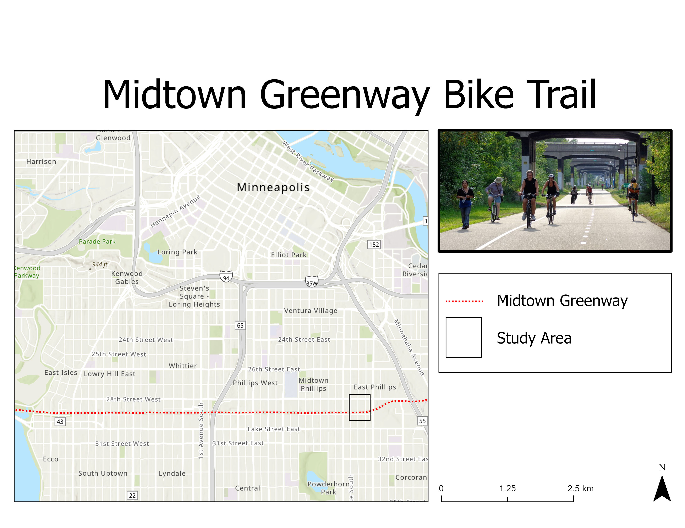
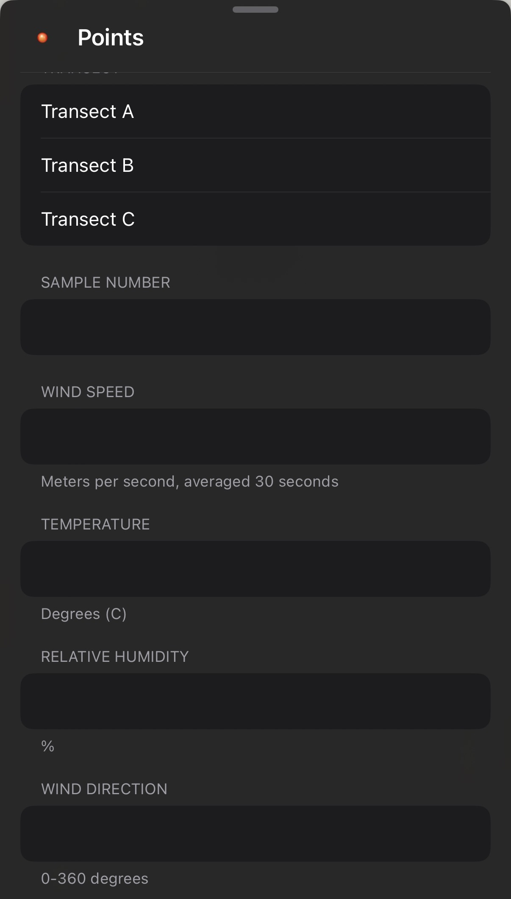
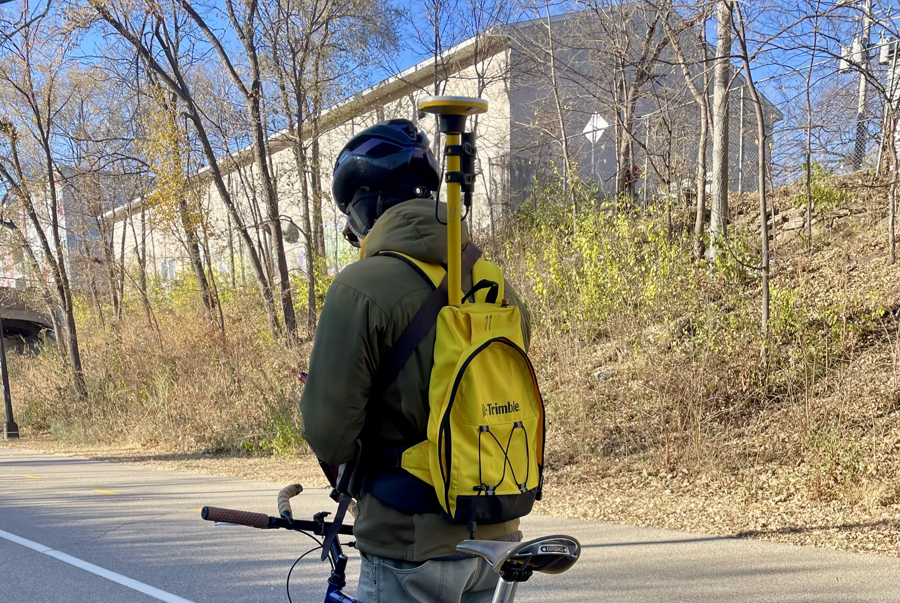
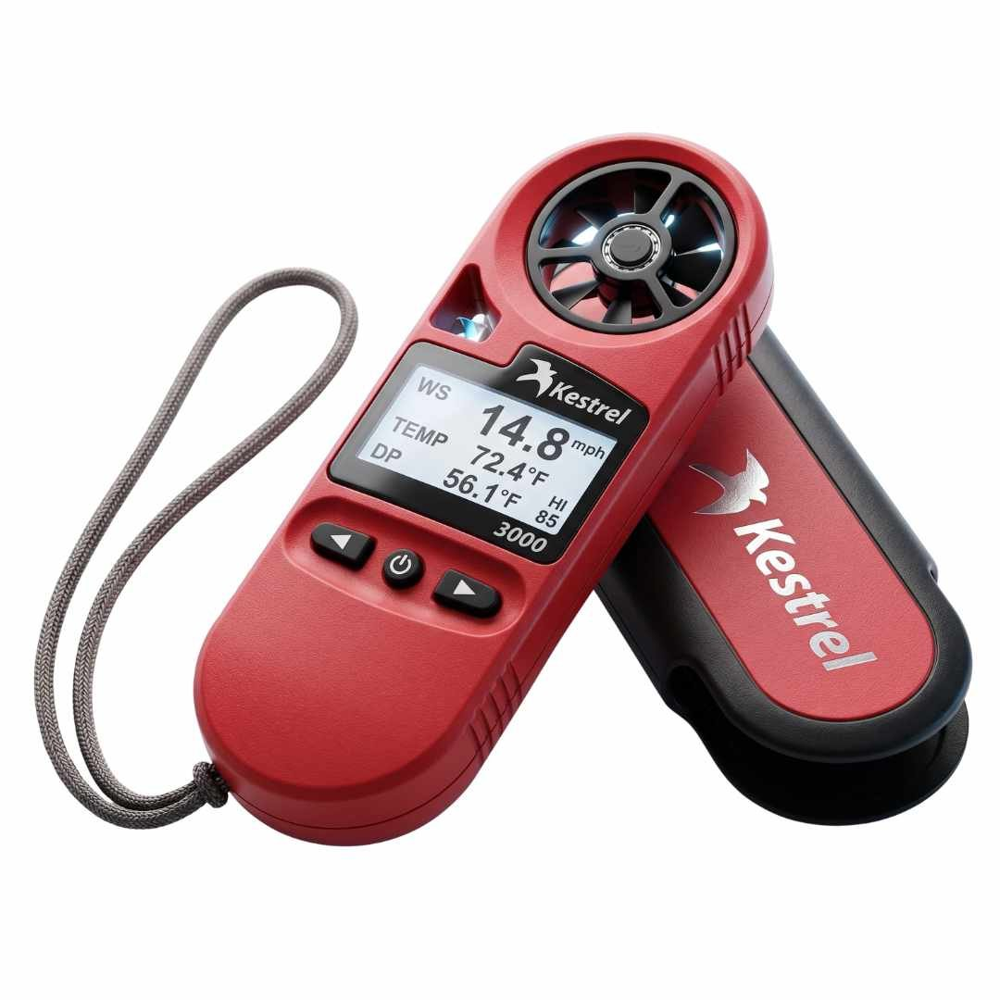
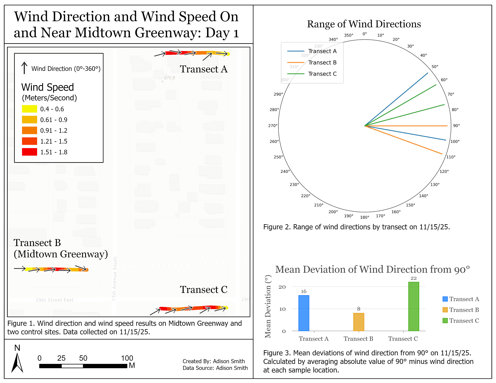

One transect along the Midtown Greenway and two nearby control transects.
As a year-round bike commuter, I’m highly attuned to microclimates, especially when they involve headwinds. The Midtown Greenway runs east-west through Minneapolis and is situated within a corridor. It seemed to me that regardless of the dominant wind direction, the Greenway channels wind into an east-west direction.
I decided to put that observation to the test by comparing wind direction along the Greenway with nearby control locations.
Study Area

Study Design
Wind observations were collected at five locations along each transect.
The study was repeated across three separate field sampling days.
Data Collection




Results
For each day, I created layouts that visually compare the wind direction on each transect, compare the range of wind directions along each transect, as well as the mean deviations from the east-west direction. The results from all three days supported my hypothesis that the greenway corridor channels wind more consistently in the east-west direction.

Skills
Field GIS
GNSS
Esri Field Maps
Spatial Analysis
Field Study Design
Environmental Data Collection